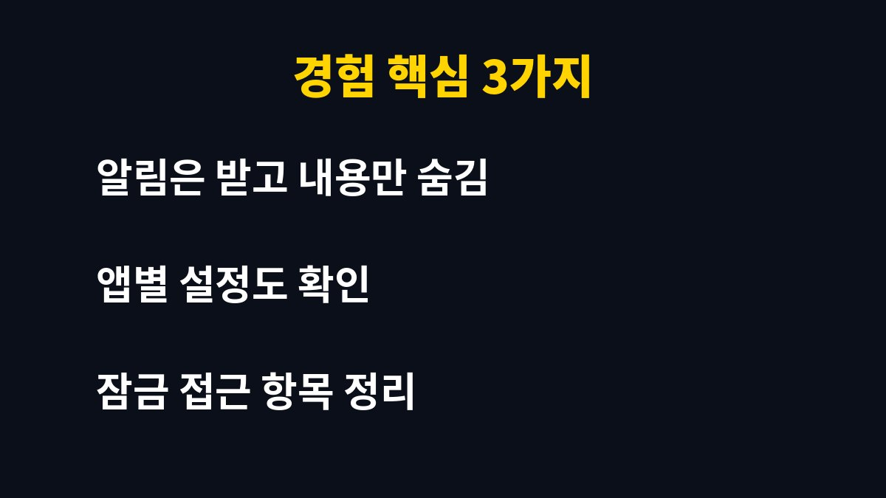

아이폰 알림 미리보기 때문에 잠금화면에 메시지 내용이 그대로 보여 불안했던 사람에게 필요한 기준과 순서를 담았다.
설정에서 미리보기를 잠금 상태에서만 숨기도록 바꾸면 편의는 지키면서 내용 노출은 줄일 수 있다.
나는 쇼핑몰 주문 문자와 거래처 연락을 폰으로 자주 받는 1인 사업자이고 두 아이 아빠다.
아이가 내 폰을 집어 들 때 화면에 뜬 내용이 눈에 들어오는 것을 보고 설정을 다시 살폈다.
식탁 위에 폰을 올려 두면 아이들이 화면을 켜고 알림을 읽는다.
거래처 이름이나 결제 관련 문구가 그대로 보이면 마음이 편하지 않았다.
큰일이 난 것은 아니었지만 미리 막아 두는 편이 낫다고 판단했다.
쇼핑몰 주문 알림은 하루에도 수십 번 울리기 때문에 한 번 설정해 두면 계속 효과가 있다는 점도 마음에 들었다.
가족이 함께 쓰는 공간에서는 작은 노출도 쌓이면 불편함이 된다고 생각했다.
밖에서는 옆자리에서 화면이 보일 수 있다.
인증번호 문자가 뜨는 순간 주변 시선이 신경 쓰인 적이 있다.
알림 자체를 끄기보다 보이는 범위를 줄이는 방법을 찾았다.
업무 연락은 놓치면 안 되므로 소리와 진동은 그대로 두는 것이 원칙이었다.
결국 필요한 것은 알림을 막는 것이 아니라 누가 볼 수 있는지를 조절하는 일이었다.
알림을 전부 끄면 주문 확인이 늦어질 수 있다.
그래서 알림은 받되 내용만 가리는 쪽을 택했다.
폰을 잠금 해제한 뒤에는 내용이 보이므로 사용에 큰 불편이 없었다.
얼굴 인식으로 바로 열리는 환경이라면 화면을 보는 순간 내용이 나타나서 체감 불편은 거의 없다.
다만 마스크나 모자 때문에 인식이 늦어질 때는 한 번 더 확인하는 수고가 생길 수 있다.

미리보기 옵션은 대체로 세 가지로 나뉜다.
| 옵션 | 화면에 보이는 것 | 내 판단 |
| 항상 | 잠금 중에도 내용 표시 | 가족과 쓰면 부담 |
| 잠겨 있지 않을 때 | 잠금 해제 후에만 표시 | 내가 고른 설정 |
| 안 함 | 앱 이름만 표시 | 가장 조심스러운 선택 |
나는 두 번째 옵션이 사용 편의와 보호 사이에서 가장 균형이 맞았다.
먼저 설정의 알림 항목에서 미리보기 보기를 전체 기준으로 바꾼다.
그다음 은행이나 메신저처럼 민감한 앱은 앱별로 한 번 더 확인한다.
앱마다 별도 설정이 있어 전체 설정만으로는 달라 보일 수 있다.
나는 메신저와 문자 앱, 은행 앱 세 곳을 우선 확인했다.
설정을 바꾼 뒤에는 앱을 한 번 닫았다가 다시 알림을 받아 보는 것이 확실하다.
Face ID 및 암호 메뉴에는 잠금 화면에서 접근을 허용할 항목이 모여 있다.
쓰지 않는 항목은 꺼 두면 잠금 상태에서 열 수 있는 범위가 줄어든다.
메뉴 이름은 iOS 버전에 따라 조금 다를 수 있다.
아래 순서는 5분이면 충분하다.
마지막 테스트까지 해 보아야 설정이 제대로 적용됐는지 알 수 있다.
잠금화면 알림은 편리하지만 누가 옆에 있는지에 따라 부담이 되기도 한다.
나는 알림을 끄는 대신 미리보기만 숨기는 방식으로 바꾼 뒤 마음이 한결 가벼워졌다.
가족 구성이나 일하는 환경에 따라 알맞은 옵션이 다르므로 자신의 상황에 맞춰 고르면 된다.
가족과 폰을 가까이 두고 지내는 사람이라면 이 설정이 생각보다 큰 안심이 된다.
인증번호나 결제 알림처럼 남에게 보이기 싫은 문구가 많은 사람일수록 효과를 크게 느낄 것이다.
한 번 바꿔 두면 이후에는 신경 쓸 일이 거의 없다는 점이 가장 큰 장점이다.
설정이 번거롭게 느껴져도 5분 투자로 매일 쓰는 폰의 노출 걱정을 덜 수 있다.
오늘 저녁 폰 설정을 열어 알림 미리보기 항목부터 확인해 보기를 권한다.
※ 2026년 기준 개인 사용 경험과 공식 발표를 바탕으로 정리한 글이며, 기기·앱 버전에 따라 메뉴 이름이 다를 수 있다.